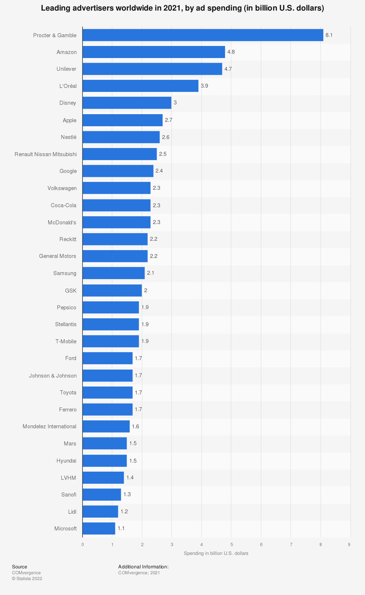
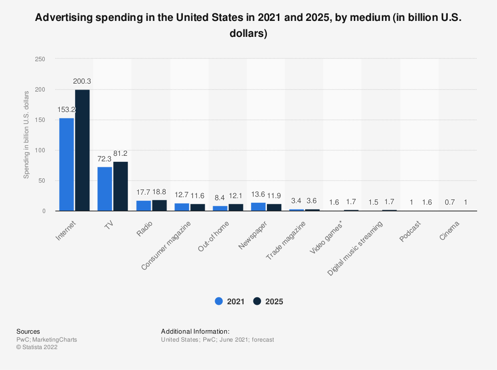

5 Advertising
5.1 First, some reading
Read Understanding Media and Culture Chapter 12.1. We’ll read 12.2 next week.
5.2 Advertising evolved
You’ve taken a spin through the Understanding Media and Culture’s advertising section to learn about the history of the industry. Just as media has evolved, changes in society and technology have ensured the advertising industry keeps time with these changes and is sometimes the cause of change.
So, what is advertising? Let’s start with what is marketing. According to the American Marketing Association, “Marketing is the activity, set of institutions, and processes for creating, communicating, delivering, and exchanging offerings that have value for customers, clients, partners, and society at large.” Marketing is also easily understood through the four Ps of marketing: product, place, price, and promotion. Advertising, and public relations, falls under the fourth P, promotion.
Advertising is any paid placement of content intended to reach an audience about an organization, good, service or idea. In advertising, you are communicating a simple, fixed message to encourage a group of people (or target audience) to do something. You want them to think, feel, or behave in a specific way by motivating them to purchase, attend, believe, understand, sign up, show up or encourage them to take action. It could be as simple as having them comment, like and subscribe below. Advertising is not always about selling, but that is generally a key element in what the brand wants the audience to do.
5.3 Brands and branding
As consumer culture grew and more products were available on shelves it was crucial for them to distinguish themselves from one another. Think for a moment, how do you know Tide is Tide and Colgate is Colgate? Do those products mean something to you? It’s because of the brand that has been built. According to Hanson, a brand name, “is a word or phrase attached to prepackaged consumer goods so that they can be better-promoted to the general public through advertising” Hanson (2022). Some of the oldest brands around are still in production (and maybe your dorm room) today. Levi Strauss & Co. has been around since 1853, Quaker Oats since 1877 and Campbell’s Soup since 1869. Each of these brands has built and maintained brand equity—perceived value—in the minds of their consumers by focusing on generating a favorable image, perception and attachment to the product, company name, brand name or trademark. However, brands go beyond just consumer packaged goods like Kellogg’s cereals or Starbucks coffee. The National Parks Service, the NFL or the University of Nebraska-Lincoln likely have some level of brand equity built with you and they are not something tangible.
The goals of branding are simple to list but hard to do. Belch & Belch define the goals of branding as:
“Building and maintain brand awareness and interest
Develop and enhance attitudes toward the company, product or service
Build and foster relationships between the consumer and the brand” Belch and Belch (2021)
Brand identity is the visual approach to brand building. When you read Nike you may immediately think of the swoosh, the line “Just do it” or the block logo… but you may also recall a personal experience you’ve had with the brand, recollections of quality products or an athlete associated with the brand. Branding is achieved through the help of advertising, and public relations.
5.4 The advertising business
For the advertising business to work, there are a handful of players involved. The client is the brand, product or organization that desires to reach a group of people. Those people are the audience. An audience is a targeted group of folks based on several characteristics. The avenue to reach the audience is through media. And who makes all this happen? Well, that is the advertising agency.
5.4.1 The client
The client is the brand, product or service that wants the interest or attention of a specific group of people. The client at a large company would consist of a team of folks in a marketing department, but the client could also be one person who owns a local candle shop. The client will generally source an agency and come to the meeting with a list of goals an advertising campaign hopes to achieve. These goals could include increase sales, launch a new product, rebuild trust or get the current audience to buy more of something. The client is responsible for paying the agency a fee for their research and creative output, but also the cost of placing that creative output to reach the audience.
Spending in advertising is grand, look at the clients who spent the most in 2021.

5.4.2 The audience
The audience is a group of people that are attractive to the client. Typically referred to as the target or target audience, they are segmented by demographics, psychographics and geodemographics. Demographics are if we had to put folks in categories like age, race/ethnicity, gender, sexual orientation, household income, and education. This information helps the agency better understand the basics of an audience. Psychographics is more about what the target believes and values, and how it behaves. One common framework is the VALSTM Framework. This framework measures the motivation and resources of the audience. Visit the website to learn more about each category in the framework.

Geodemographics follow the understanding that people who live in the same area have similar demographics and psychographics. A resource for understanding geodemographics is Claritas Prism. Visit the resource and type in your own zip code to learn more about the audience profiles in your area. This program breaks audiences into social and lifestyle groups. For example, the Lincoln zip code 68506 has five distinct groups of people who live there. Looking at one of them, the Middleburg Managers, we can learn the following:
Upscale Younger Family Mix
Middleburg Managers tend to be upper middle-class with solid white-collar jobs and graduate-level educations. Established in their suburban and second-city lifestyles, they enjoy attending sporting events with their families when they aren’t traveling frequently for business. They are more thrifty with their spending, despite an upscale income, investing in a college savings plan and their future retirement.
Then, Claritas Prism shows us where this group of people can be commonly found across the U.S.

Why is this important? Because you need to know who the audience is so the client and agency can work together to define:
What message will resonate with this group
Where the audience consumes media
5.4.3 The media
It is so important that agencies recommend smart strategy and tactics for where to place media. The agency is spending the client’s money afterall. The golden rule in media placement is to meet the audience where they are. If I was a media planner I would not recommend a client trying to reach Gen Z to purchase ad space on the radio or even Facebook. That generation isn’t consuming content on those platforms so it would be hard enough to reach them, let alone motivate them to do something.
Advertising is everywhere, and we work to avoid it. Advertisers are interrupting whatever it is you were doing… watching TV, listening to a podcast or mindlessly scrolling on social media. Regardless it is disruptive and unwelcome. As a society, we work to avoid ads through time shifting, ad blockers and paying extra for premium streaming in video or music to avoid ads. It’s estimated we see between 4,000 and 10,000 ads per day, so the media chosen matters. Media planners need to cut through the clutter and noise to reach the intended audience. The places we see advertisements almost feel endless nowadays. It seems advertising can be placed anywhere now, here are some common locations:
Newspaper
Radio
TV
Magazines
Out-of-home
Busses
Bus Stops
Taxi toppers
Billboards
Digital billboards
Wallscapes
Shopping Malls
Airports
Movie theaters
Podcasts
Internet
Search Engines
Social Media
Video games
Mobile apps
Traditional media refers to any form of media that existed before the internet. Looking at the list above traditional media encapsulates print (newspaper and magazines), radio, TV and non-digital elements of out-of-home. Digital advertising spend surpassed traditional ad spending in 2019. The future of advertising is digital, and the dollars spent in that space continues to climb.
Alpha Efficiency takes a dive into the trends of digital ad spending, stating:
“According to eMarketer.com research, the total amount spent on digital advertising this year in the US will grow 19% to $129.34 billion, which is 54.2% of estimated total US ad spending. Those statistics include all internet-connected devices and various advertising formats, but mobile ads will keep the authority with almost two-thirds out of total ad spending with around $87.06 billion in 2019.”

5.4.4 The agency
Now to the final player in advertising, the agency. This is the organization that does the work to create an advertising campaign. An ad campaign is done in phases: research, strategy, creative, media buying and measurement. Each of these phases involves a team of people and collaboration with the client.
Research is when the agency works to know everything about the consumer, client, category and brand. Primary and secondary research is conducted to gain a full scope of what is happening in the market. Generally, the client will come with a problem and the research phase looks to find answers and set the direction for the ad campaign. Account planner and strategist are general job titles you might see in an agency for those who conduct the research.
Strategy is the next step. Once the agency has answered the questions on why the problem exists and how to solve it, the strategist develops the plan to move forward. You often see the same person conduct the research and set the strategy for a client. A strategist is a person who often develops the creative brief for the creative team. A creative brief is a short document that synthesizes the consumer problem, campaign goals, information about the audience and initial plans for creative direction. Every agency and organization will have a different approach and outline to the brief.
Creative is the piece we see as consumers. Creative departments are led by a creative director who is the final stop for the creative work before a client sees it. The creative teams are split by written and visual. A graphic designer or art director is responsible for the visual work the audience sees, while a copywriter writes all the content an audience reads or hears. Creative departments can contain photography and videography at larger, full-service agencies, while some outsource this work to a production house.
Media buying is just that. The person is responsible for selecting, placing and negotiating media rates to pay the outlet to run the creative work. The person in this role might be called a media buyer, media strategist or media planner. This individual will often use tools to assist in where the best locations to place media and that will help in the negotiation process. This is also the person responsible for providing metrics and benchmarks for how to work is performing. Programmatic advertising is a new form of media buying where the buying and placement of media is automatic in a real-time bidding situation. This is where that rug will follow you around the internet. You have a digital profile, and the ad space is bought in real-time based on your online behavior.
Measurement is an overall look at how the campaign is performing. Is the work that is out in the world helping the client meet the goals that were set? This is an ongoing process once media is placed. Especially with the growth in digital media, it is easy to adjust both the placement and timing as well as creative in real-time.
Account services is the final group of people involved in the advertising campaign process; they are not responsible for a specific step but rather involved in the entire process. This is the client-facing group made up of account executives, account coordinators, account managers and project managers. This team is responsible for keeping in communication with the client, ensuring timelines are met and budgets are not exceeded. This is the group that often works to upsell the client on additional work and services and is responsible for ensuring the client is happy with the process and progress.
Many of the world’s largest advertising agencies are part of larger holding groups. The big four are WPP, Omnicom Group, Publicis Groupe and Interpublic Group of Companies (IPG). Other notable holding companies include dentsu inc. and Havas. Read this article to learn more about what agencies fall under the groups, annual revenue, locations, services offered and notable clients.
5.5 More reading
Read Evolution, influence, and trends in digital advertising